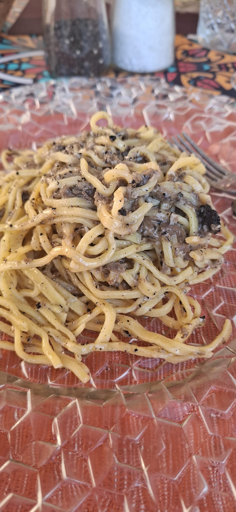

Dal 1927 il Ristorante Tre Stelle porta avanti la tradizione marchigiana con passione e dedizione. Riccardo Antonini vi accoglie in sala, mentre in cucina la cuoca Maria prepara i sapori autentici delle Marche: qui le lumache e la trippa si fanno come una volta, ed è per questi due piatti che da generazioni si viene a Castelraimondo da tutta la regione.